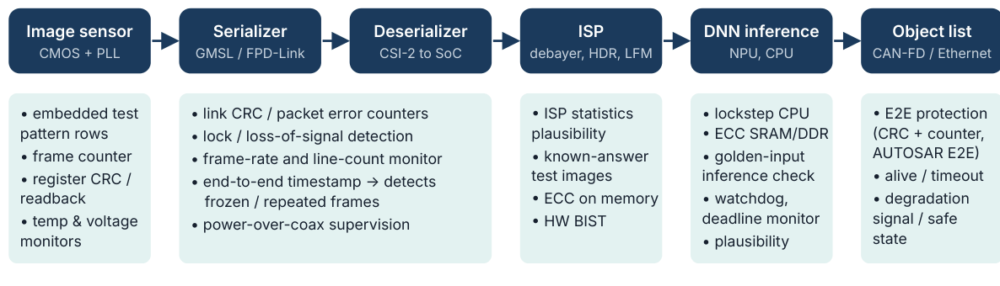
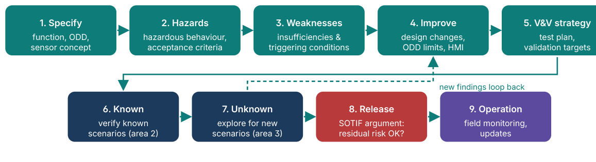
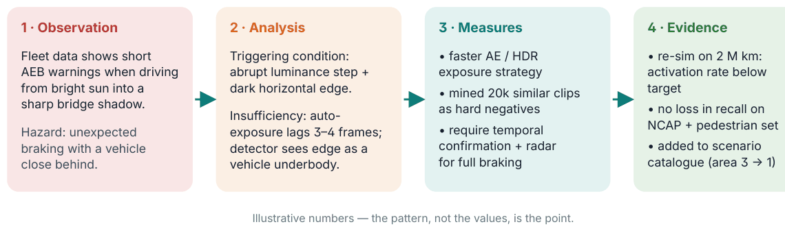
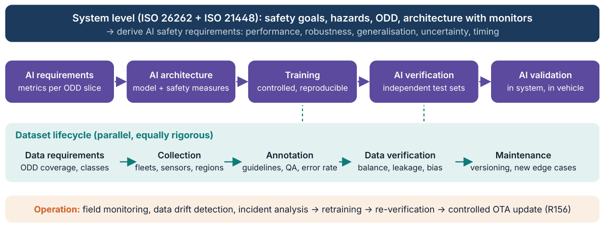
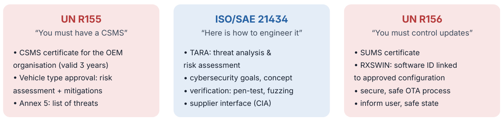
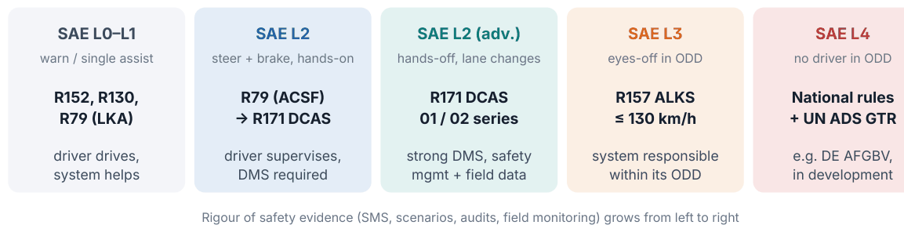
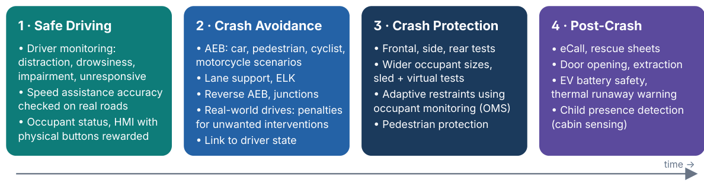
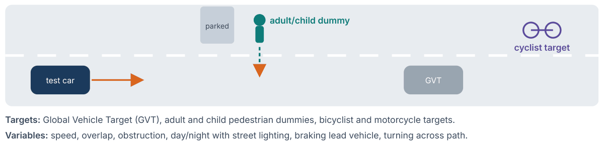
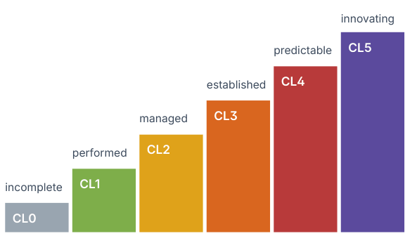
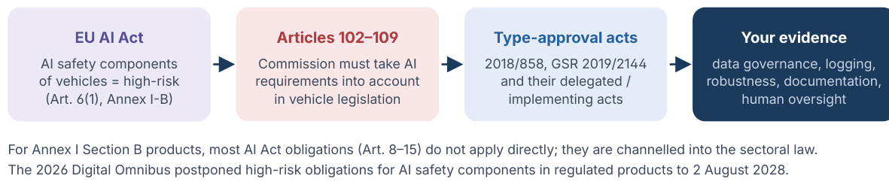

Automotive Standards and Regulations for Embedded Computer Vision
What each standard is for, what "compliant" really means, which tests are run, and how to explain it all clearly to customers and auditors.
1The big picture
Before diving into individual documents, it helps to see that they are not all the same kind of thing. Some are law, some are “how a careful engineer would do it”, some are marketing pressure, and some describe how your organisation should work. Mixing these up is the most common source of confusion in customer meetings.

1.1Regulation vs. standard — why the difference matters
A regulation is law. If the vehicle does not meet UN R158 in Europe or FMVSS 111 in the US, it cannot be sold. A regulation usually says what the vehicle must achieve (“the driver must be able to see a 0.8 m tall object 3.5 m behind the car”) and how the test is run, but not how you design the system.
A standard is the documented “state of the art”. ISO 26262 is not a law anywhere. But if a pedestrian is injured and your camera ECU was involved, a court will ask whether you developed it the way a careful, competent company would — and the industry’s answer to that question is ISO 26262, ISO 21448 and their siblings. In addition, regulations increasingly point to standards: UN R155 expects a process similar to ISO/SAE 21434, and UN R157/R171 require a safety management system and evidence that looks very much like ISO 26262 + SOTIF work. So standards become quasi-mandatory.
Consumer ratings (Euro NCAP, US NCAP, IIHS) are entirely voluntary — and yet they often decide what your camera must detect, because OEMs refuse to launch a car below five stars in Europe. Euro NCAP test scenarios are frequently copied 1:1 into OEM requirement specifications.
Process models such as Automotive SPICE do not say anything about the product. They assess whether your organisation plans, specifies, tests and traces its work properly. Many OEMs refuse suppliers below “ASPICE Capability Level 2”.
1.2How a vehicle becomes legal: EU vs. US

1.3The four questions of safety for a camera system
A practical way to remember the main safety standards is to ask four questions about your perception system. Each question is answered by one document:

“We address safety from four angles: ISO 26262 for faults, ISO 21448 for the limits of perception, ISO/PAS 8800 for how we develop and validate the neural networks, and ISO/SAE 21434 for cyber threats. On top of that, the vehicle-level regulations — R152, R158, FMVSS 127 and so on — define the minimum performance the function has to prove in the approval tests.”
1.4Who is responsible for what?
Regulations are addressed to the vehicle manufacturer. A Tier-1 camera supplier is never “R158-approved” on its own (except where a regulation approves a component, such as a camera-monitor system under R46 or a reversing device under R158 Part I). In practice, however, the OEM pushes the requirements down the supply chain through the requirement specification, the Development Interface
Agreement (DIA) for safety and the Cybersecurity Interface Agreement (CIA) for security. As a supplier you are expected to deliver the evidence that lets the OEM pass approval.
| Role | Typical responsibility |
|---|---|
| OEM | Vehicle-level hazard analysis, safety goals, type approval, homologation tests, field monitoring, recalls. |
| Tier-1 (camera / ADAS ECU) | System & software development to the agreed ASIL, perception performance, SOTIF analysis of the sensor, cybersecurity of the ECU, test reports that support approval. |
| Tier-2 (SoC, image sensor, serializer) | Hardware developed as Safety Element out of Context (SEooC) with a safety manual, FMEDA, AEC-Q qualification, security features (secure boot, crypto engines). |
| Software / algorithm vendor | Perception stack as SEooC or as part of the Tier-1 scope; dataset and model documentation per ISO/PAS 8800; tool qualification evidence. |
1.5How to read regulation and standard references
“UN R152, 01 series of amendments, Supplement 3” — the number identifies the topic; a new series brings substantive new requirements (usually with transition dates, and old approvals may stop being accepted for new registrations); a supplement clarifies or adds options without invalidating existing approvals. The approval mark on a vehicle or part shows the country that granted it: E1 = Germany, E4 = Netherlands, E11 = United Kingdom, E13 = Luxembourg.
Working groups to know: WP.29 (the World Forum that votes), GRVA (automated/connected vehicles: R155–R157, R171, R152), GRSG (general safety, incl. R46, R158, R159).
Federal Motor Vehicle Safety Standards live in 49 CFR Part 571. The 100 series covers crash avoidance (FMVSS 111 rear visibility, FMVSS 127 AEB), the 200 series crashworthiness, the 300 series post-crash. Rules are issued as an NPRM (proposal), then a final rule, sometimes followed by a response to petitions for reconsideration.
IS = full International Standard (e.g. ISO 26262), TS = Technical Specification, PAS = Publicly Available Specification (faster, less consensus, e.g. ISO/PAS 8800), TR = Technical Report (informative). The year after the colon is the edition: ISO 21448:2022.
2ISO 26262 — Functional safety
The question ISO 26262 answers: “When something inside our electronics or software goes wrong, can it hurt someone — and what have we done so that it doesn’t?”
| Type | International standard |
|---|---|
| Current edition | 2018 (2nd), 12 parts |
| Next | 3rd edition in drafting (expected ~2027+) |
| Legally required? | No — but expected by every OEM |
Electronics fail in two ways. Random hardware faults happen no matter how well you design: a cosmic ray flips a bit in DDR, a capacitor ages, a solder joint cracks. Systematic faults are mistakes made by people: a wrong requirement, a buffer overrun, a misconfigured ISP register. ISO 26262 (derived from the industrial standard IEC 61508) gives a disciplined way to reduce systematic faults through process, and to detect and control random faults through safety mechanisms — with a rigour proportional to how dangerous the failure would be.
2.1The core idea in one picture: risk decides rigour
Everything starts at the vehicle level with a Hazard Analysis and Risk Assessment (HARA). You list what the function can do wrong (e.g. “AEB brakes hard without reason”), place it in driving situations (“motorway, 130 km/h, car following closely”) and rate three things:
- Severity (S0–S3) — how badly could people be injured? S3 = life-threatening, survival uncertain.
- Exposure (E0–E4) — how often is the vehicle in that situation? E4 = most drives (e.g. driving on a road with other vehicles).
- Controllability (C0–C3) — can the typical driver or other road users avoid the harm? C3 = difficult to control or uncontrollable.
The combination gives the ASIL (Automotive Safety Integrity Level) from A (lowest) to D (highest), or QM (“quality management is enough”). A handy memory trick that reproduces the official table exactly: add the numbers S + E + C.

For a driver-assistance function such as camera AEB, the dangerous malfunction is often the false positive (phantom braking on a motorway, with a car close behind), not the missed detection. The driver remains responsible for braking, so a missed pedestrian is a performance limitation (handled by SOTIF and NCAP) while an unjustified 1 g brake is a malfunction with a safety goal. That is why many AEB systems carry an ASIL on the “do not brake without reason” goal, and why perception teams spend so much effort on false-activation rates.
2.2From safety goal to code: the V-model
Safety goals are refined step by step into requirements for each element of the architecture, then verified on the way back up. The left side of the V is specification and design; the right side is integration and testing. Each box produces work products (documents, analyses, test reports) that later form the safety case.

2.3Handling random hardware faults: metrics
For hardware, it is not enough to say “we designed it carefully”. You must show with numbers that dangerous faults are either very rare or detected by a safety mechanism. This is done with an FMEDA (Failure Modes, Effects and Diagnostic Analysis) using failure rates in FIT (failures per 10⁹ hours).
| Metric | Meaning in plain words | ASIL B | ASIL C | ASIL D |
|---|---|---|---|---|
| SPFM — single-point fault metric | Share of faults that are either harmless or caught by a safety mechanism | ≥ 90 % | ≥ 97 % | ≥ 99 % |
| LFM — latent fault metric | Share of “sleeping” faults (e.g. a broken monitor) that are found, e.g. by start-up self-tests | ≥ 60 % | ≥ 80 % | ≥ 90 % |
| PMHF — probabilistic metric for random HW failures | Residual rate of violating the safety goal | < 100 FIT | < 100 FIT | < 10 FIT |
Target values from ISO 26262-5:2018 (recommended targets for SPFM/LFM; PMHF as target). ASIL A has no quantitative target.
2.4Safety mechanisms in a camera pipeline
A modern camera ECU is a chain: image sensor → serializer → coax link → deserializer → SoC (ISP, DNN accelerator, CPU) → vehicle bus. Each link can fail silently, which is the worst case for vision: a perfectly plausible but stale or corrupted image. Typical mechanisms:

2.5What you must do to claim compliance
There is no ISO 26262 “certificate” required by law. “Compliance” means you can present a coherent safety case: an argument, backed by evidence, that the safety goals are met. In practice that includes:
- Safety plan and defined roles (functional safety manager, independence of assessors).
- Item definition, HARA, functional and technical safety concepts with full traceability down to HW/SW requirements.
- Safety analyses: FMEA/FTA at system level, FMEDA for hardware, dependent failure analysis (DFA) for shared resources, software safety analysis.
- Verification evidence at every level of the V (reviews, tests, coverage).
- Tool confidence: compilers, code generators, static analysers — and DNN compilers — must be classified (TCL) and qualified if needed.
- Confirmation measures: confirmation reviews of key work products, a functional safety audit of the process, and a functional safety assessment, with independence that grows with ASIL (for ASIL D, assessment by a person/organisation independent of the project, typically level I3).
- DIA with each customer/supplier stating who does which work product.
Third parties (TÜV SÜD, TÜV Rheinland, exida, SGS, UL…) issue process certificates (“the organisation’s process is ISO 26262-compliant up to ASIL D”) or product certificates (“this SoC, used as described in its safety manual, can support ASIL B”). These are helpful but never replace the OEM’s own safety case.
2.6Typical tests
| Test | What it shows |
|---|---|
| Requirements-based unit & integration tests | Every safety requirement has a passing test; structural coverage (statement, branch, MC/DC highly recommended for ASIL D). |
| Fault injection (HW & SW) | Inject bit flips, stuck frames, CRC errors, link drops, clock failures, delayed tasks → mechanism detects within the fault-tolerant time interval and the system goes to the safe state. |
| Back-to-back tests | Model or reference implementation vs. target code (e.g. float DNN vs. quantised deployed DNN) produce equivalent results. |
| Resource & timing tests | Worst-case execution time, memory, freedom from interference between ASIL and QM partitions. |
| HIL / vehicle integration | End-to-end behaviour with real ECU, video injection and simulated vehicle; safe-state transitions; degradation warnings to the driver. |
ISO 26262:2018 assumes software whose behaviour is fully specified by requirements and code. A neural network’s behaviour is specified by data. The standard can handle the code that runs the network (inference engine, pre/post-processing, monitors) very well, but it says almost nothing about whether the trained weights are good enough. That gap is filled by ISO 21448 and ISO/PAS 8800 — and is one of the main drivers for the 3rd edition currently being drafted.
“Our camera ECU is developed according to ISO 26262 for the ASIL you allocate in the DIA — typically ASIL B for the perception output. We protect the full image chain against silent faults such as frozen frames and link corruption, we provide an FMEDA and a safety manual, and our process is independently assessed.”
3ISO 21448 — Safety of the Intended Functionality (SOTIF)
The question SOTIF answers: “Nothing is broken, the software does exactly what we wrote — but is what we wrote good enough for the real world?” For computer vision this is the most important safety standard.
| Type | International standard |
|---|---|
| Edition | ISO 21448:2022 (was PAS 2019) |
| Scope | ADAS & automated driving, all levels |
| Legally required? | No — but expected; referenced by R157/R171 evidence |
A camera may be perfectly healthy and still miss a pedestrian wearing dark clothes at night in the rain, or brake for a shadow on the road. These are functional insufficiencies: limitations of the specification or of the technology. ISO 26262 does not cover them, because nothing has “failed”. SOTIF provides the method to find these limitations, reduce them, and argue that the remaining risk is acceptable.
3.1Core vocabulary
Triggering condition — a specific situation that activates a weakness. Example: low sun directly in front of the camera.
Functional insufficiency — the weakness itself, either in the specification or in performance. Example: the detector’s recall drops sharply when the image is saturated by glare.
Hazardous behaviour — what the vehicle then does. Example: AEB does not brake for a pedestrian; or brakes for a lens flare.
Acceptance criteria / validation targets — the quantitative bar for “residual risk is acceptable”. Example: fewer than X unjustified AEB activations per 10⁶ km.
3.2The four areas of scenarios
SOTIF’s best-known picture splits all possible driving scenarios into four areas depending on whether they are known or unknown to the developers and safe or unsafe for the system. The whole SOTIF process is about moving scenarios out of the unsafe areas.

3.3The SOTIF workflow

3.4Triggering conditions for cameras — the list every CV team should own
| Category | Examples | Typical mitigation |
|---|---|---|
| Illumination | Low sun, tunnel entry/exit, night with oncoming headlights, street-lamp flicker, high-contrast shadows | HDR sensor, LED flicker mitigation, auto-exposure tuning, glare detection → availability flag |
| Weather | Heavy rain, snow, fog, spray from trucks, wet road reflections | Training data, degradation detection, ODD restriction, sensor fusion with radar |
| Sensor & optics | Dirt, droplets or ice on lens/windscreen, condensation, calibration drift after windscreen replacement | Blockage detection, online calibration, heating, cleaning, service procedures |
| Object appearance | Children, wheelchairs, people carrying objects, costumes, partially occluded pedestrians, unusual vehicles (trailers, car transporters) | Dataset coverage, rare-class mining, tracking, fusion |
| Look-alikes | Pedestrian printed on a bus or billboard, reflections in shop windows, road-side mannequins, shadows of bridges | Depth/motion cues, temporal consistency, radar confirmation |
| Road & infrastructure | Faded or temporary lane markings, construction zones, unusual traffic signs, country-specific signage | Map fusion, ODD definition, regional datasets |
| Vehicle state | Pitch during hard braking, heavy load changing camera height, vibration | Dynamic extrinsic compensation, robust geometry |
3.5How much testing is “enough”? The validation target
SOTIF asks you to justify a quantitative validation target. A simple statistic illustrates why pure test-driving cannot do it alone. If you drive t hours with zero events, you can claim with 95 % confidence that the event rate is below about 3 / t (the “rule of three”).

In practice the argument is built from several sources: open-loop replay of large recorded datasets (“re-sim”), closed-loop simulation (e.g. CARLA, vendor tools) with scenario variation, proving-ground tests with soft targets, shadow-mode fleet data, and statistical extrapolation. The acceptance criteria are often derived from human driver accident statistics (“at least as good as a careful human driver”) or from customer acceptance (“no more than one false brake event per N years of driving”).
3.6Worked example: phantom braking under bridge shadows

3.7What you must do to claim compliance
- A documented specification including the Operational Design Domain (ODD) and the known limits of the sensor set.
- Hazard identification for intended behaviour and acceptance criteria with rationale.
- A systematic triggering-condition analysis (e.g. SOTIF-HAZOP, sensor-chain analysis, data analysis) and evidence of mitigations.
- A verification & validation strategy with defined targets, coverage of known scenarios and an exploration strategy for unknown ones.
- A SOTIF release argument signed off before start of production, and a field-monitoring process afterwards.
“ISO 26262 tells us the system doesn’t break dangerously. SOTIF tells us the system is good enough when it works. For our camera we maintain a catalogue of triggering conditions — glare, rain, dirt, unusual pedestrians, look-alikes — test each one, and validate false-activation and missed-detection rates against targets we agreed with you, using recorded data, simulation and track tests.”
4ISO/PAS 8800 — Road vehicles: Safety and artificial intelligence
The question ISO/PAS 8800 answers: “How do we develop, verify and monitor a neural network so that we can honestly argue it is safe enough for its job in the car?”
| Type | Publicly Available Spec. |
|---|---|
| Published | December 2024 |
| Builds on | ISO 26262 + ISO 21448 |
| Relevance | Every DNN in a safety-related path |
A detector’s behaviour is defined by its training data and training process, not by readable code. You cannot review weights line by line, structural coverage is meaningless, and performance depends on how well the data covers the real world. ISO/PAS 8800 fills this gap: it treats the dataset as a safety-relevant work product and defines an AI safety lifecycle around it. Its scope covers risks from output insufficiencies, systematic errors and random hardware errors of AI elements.
4.1The core idea: the data is the specification

4.2Key concepts explained simply
1. AI safety requirements are measurable and sliced
Instead of “detect pedestrians”, you write requirements such as: “For pedestrians taller than 1 m within 40 m in the defined ODD, the per-frame recall shall be ≥ X % and the track-level miss rate ≤ Y within 0.5 s, for every slice (night, rain, children, occlusion > 50 %…)”. Averages hide dangerous weaknesses; slices reveal them.
2. Datasets are engineered artefacts
Training, validation and test sets need documented requirements, provenance, versioning and quality checks. Important topics: coverage of the ODD, label accuracy (measured annotation error rate), independence of test data from training data (no leakage of the same drive or location), and representativeness of rare but critical cases.
3. Properties beyond accuracy
The PAS discusses safety-related properties such as robustness (small perturbations like noise or compression do not flip outputs), generalisation (works on new cities, cars, cameras), uncertainty estimation (the model knows when it does not know), predictability and explainability to a level useful for analysis.
4. Architecture compensates for the model
No DNN will be perfect, so the system adds measures around it: plausibility checks (physics, tracking consistency), redundancy and diversity (radar or a second, differently trained network), out-of-distribution or uncertainty monitors, and restriction of authority (e.g. limited braking without radar confirmation).

5. Assurance argument and field monitoring
The end result is a structured assurance argument that the AI element contributes to an absence of unreasonable risk, kept alive after start of production by monitoring the fleet for new triggering conditions and data drift.
4.3Typical evidence and tests
| Activity | Example evidence |
|---|---|
| Dataset specification & analysis | Coverage matrix of ODD attributes (weather × light × road type × object class × distance); gap list with mitigation. |
| Annotation quality | Labelling guideline, double-labelling audit, measured box/class error rate, impact analysis of label noise. |
| Performance verification | Per-slice precision/recall, distance-dependent metrics, temporal metrics (time to first detection), safety-weighted metrics (errors close to the vehicle weigh more). |
| Robustness testing | Noise, blur, compression, exposure changes, synthetic weather, sensor-specific artefacts (rolling shutter, LED flicker); adversarial checks where relevant. |
| Deployment equivalence | Quantised / compiled model vs. training model on the full test set (back-to-back); NPU numerical behaviour. |
| Monitor validation | OOD/uncertainty monitor detection rate vs. false alarm rate on held-out unusual data. |
| Tool confidence | Training framework, data pipeline, model compiler — classified and controlled (versioning, reproducibility). |
ISO/IEC TR 5469 (functional safety and AI, cross-industry) · UL 4600 (safety case for autonomous products) · ASPICE 4.0 MLE/SUP.11 (process view of ML and data, see chapter 10) · ISO 26262 3rd edition (in drafting, expected to align with PAS 8800 and add ML guidance).
“We follow ISO/PAS 8800: our networks have measurable, slice-based safety requirements, our datasets are versioned and quality-controlled work products with documented ODD coverage and label error rates, and we verify robustness and the deployed, quantised model — not just the training model. Around the network we add plausibility and uncertainty monitors, and we keep monitoring the fleet after launch.”
5Cybersecurity & software updates — UN R155, ISO/SAE 21434, UN R156
The question: “Could someone deliberately make our camera system see what isn’t there, ignore what is, or run code we didn’t ship — and how do we update it safely for 15 years?”
| UN R155 | Cyber Security Mgmt System LAW |
|---|---|
| UN R156 | Software Update Mgmt System LAW |
| ISO/SAE 21434 | Engineering standard (2021) STD |
| EU status | R155/R156 required for all new vehicles since July 2024 |
Cars are connected computers with a long life. Regulators decided that an OEM may only obtain type approval if it runs a certified Cyber Security Management System (CSMS) covering the whole lifecycle — development, production and years of post-production monitoring — and a Software Update Management System (SUMS) that controls every software change, including over-the-air updates of perception models. ISO/SAE 21434 is the engineering standard describing how to do the work that R155 demands.
5.1How the three fit together

5.2TARA — the heart of ISO/SAE 21434
Where ISO 26262 has the HARA, ISO/SAE 21434 has the TARA (Threat Analysis and Risk Assessment). It asks: what is valuable, how could it be attacked, how bad would that be, and how easy would it be?

5.3Threats specific to camera systems
| Threat | Possible mitigation |
|---|---|
| Injection or replay of video on the serializer link (GMSL / FPD- Link) | Link-layer authentication or encryption where supported, frame counters and timestamps, plausibility vs. vehicle motion, sensor fusion. |
| Malicious or tampered firmware / model on the ECU | Secure boot chain, signed images (incl. DNN weights and calibration), anti-rollback, HSM-protected keys. |
| Calibration manipulation via diagnostics | UDS Security Access (0x27) or Authentication (0x29) for write services, secure logging, plausibility of extrinsics. |
| Debug interfaces left open | JTAG/UART locked or authenticated in production, secure manufacturing provisioning. |
| Physical adversarial patterns (stickers, patches, projected images) | Robustness testing, temporal consistency, multi-sensor confirmation; treat as SOTIF + security overlap. |
| Model or data theft (IP) and privacy leakage of recorded video | Encryption at rest, access control, anonymisation (faces/plates) of fleet data, GDPR processes. |
5.4What you must do to claim compliance
- OEM: CSMS and SUMS certificates from an approval authority; per vehicle type a risk assessment showing the R155 Annex 5 threats are addressed; RXSWIN management.
- Supplier: organisational cybersecurity management per ISO/SAE 21434, a TARA (or contribution to the OEM’s), cybersecurity requirements and verification reports, penetration test results, vulnerability monitoring and incident response for the lifetime of the product, all agreed in a Cybersecurity Interface Agreement.
- Typical tests: security-requirement tests, fuzzing of CAN/Ethernet/diagnostic interfaces, penetration tests by independent teams, secure-boot and update negative tests, vulnerability scanning of third-party software (SBOM).
Retraining a detector and shipping new weights over the air changes the vehicle software. Under R156 it must go through the SUMS: impact assessment on approved functions (does it affect R152 or R171 behaviour?), regression testing, RXSWIN update if the approval is affected, and secure delivery. Plan your MLOps pipeline so it produces this evidence automatically.
“We support your R155 and R156 approvals with ISO/SAE 21434 work products: a TARA for the camera ECU, secure boot with signed firmware, models and calibration, authenticated diagnostics, penetration-test reports and a vulnerability-monitoring process for the whole product lifetime.”
6Camera-specific vehicle regulations
These regulations directly define what a camera must show or detect. They are concrete, test-based and binary: the vehicle either passes the test or cannot be sold.
6.1UN R158 — Reversing motion (Europe and UN-1958 countries) LAW
Many low-speed accidents involve vehicles reversing over children and other vulnerable road users the driver cannot see. R158 ensures the driver has a means — mirror, rear-view camera or detection system — to be aware of people behind the vehicle. In the EU, the General Safety Regulation made reversing detection mandatory (new types from July 2022, all new vehicles from July 2024).
R158 has two parts: Part I approves the devices (rear-view camera system, detection system such as ultrasonic sensors); Part II approves the installation on the vehicle. The regulator does not mandate a camera — the OEM may choose camera, detection system, or (for some vehicles) mirrors — but in passenger cars the camera is by far the most common solution.

Main tests and requirements (camera path)
- Field of vision: test cylinders placed at defined positions behind the vehicle must be visible on the display with sufficient size.
- Activation timing: the image must appear quickly after reverse gear is selected, and remain while reversing.
- Image quality on the display: the objects must be recognisable (size, contrast); display luminance adequate in day and night.
- Durability & robustness of the device (environmental tests), plus overlays that must not hide the critical area.
- Detection systems: warning when the test object is in the detection zone, tested for stationary objects and while reversing slowly; self-check of the system.
6.2FMVSS 111 — Rear visibility (USA) LAW
The US equivalent, which effectively mandated rear-view cameras on all new light vehicles from May 2018. It defines a 3.05 m × 6.10 m (10 ft × 20 ft) zone directly behind the vehicle in which seven test cylinders (0.8 m tall, 0.3 m diameter — the size of a small child) must be visible.
- Image displayed within 2.0 s after shifting into reverse.
- Minimum image size: the far test objects must appear large enough on the display (specified as a minimum visual angle at the driver’s eye point).
- Image must not be disabled by the driver while in reverse; rules for how long it lingers after leaving reverse.
- Field-of-view test with the seven cylinders.
- Image response-time test.
- Durability conditioning (humidity, corrosion, temperature exposure) before re-checking the image.
R158 and FMVSS 111 are viewing regulations: a human looks at the image. The pass criteria therefore concern optics, field of view, latency and display, not neural network accuracy. Yet the same camera often feeds parking and AEB-reverse functions, so lens choice and ISP tuning must satisfy both the viewing tests and the perception algorithms. Boot time matters too: the 2-second image requirement drives fast-boot design of the SoC software.
6.3UN R46 and ISO 16505 — Camera Monitor Systems (digital mirrors) LAW STD
UN R46 governs “devices for indirect vision”: mirrors and, since its 2016 amendments, Camera Monitor Systems (CMS) that can replace mirrors (digital side mirrors, digital interior mirror). R46 defines mirror classes (I interior, II/III main exterior, IV wide-angle, V close-proximity, VI front, VII motorcycles) with the required field of vision for each. For CMS, the detailed image-quality requirements and test methods come from ISO 16505.
| Topic | What is tested |
|---|---|
| Field of vision & magnification | Same visible ground area as the mirror class it replaces; minimum magnification factor so objects are not shown too small. |
| Resolution & sharpness | MTF / resolution across the display, including corners. |
| Luminance, contrast, colour | Readable in direct sunlight and at night; colour rendering sufficient to recognise e.g. indicator lights. |
| Glare, smear, blooming | Point light sources (headlights) must not wash out the image. |
| Temporal behaviour | Minimum frame rate (30 Hz, reduced in low light), short image-formation time and system latency (order of 100–200 ms), no disturbing flicker. |
| Failure behaviour | Driver must be informed if the system fails; default views cannot be switched off while driving. |
6.4Viewing regulations side by side
| UN R158 (EU / UNECE) | FMVSS 111 (USA) | UN R46 + ISO 16505 (CMS) | |
|---|---|---|---|
| Purpose | Awareness of people behind when reversing | Rear visibility when reversing | Replace mirrors while driving |
| Camera mandatory? | No — camera, detection system or mirror | In practice yes (camera) | Optional alternative to mirrors |
| Coverage | Defined zone behind vehicle; detection zone close to bumper | 3.05 × 6.10 m zone, 7 test cylinders | Ground areas of the mirror class replaced |
| Timing | Image shortly after reverse engaged | Image within 2.0 s | Frame rate, image-formation time, latency limits |
| How proven | Type approval, witnessed tests | Self-certification, NHTSA spot-checks | Type approval of device + installation |
6.5End-to-end latency: where the milliseconds go

“For viewing functions we design to R158, FMVSS 111 and, for mirror replacement, R46 with ISO 16505. These are field-of-view, latency and image-quality tests, so we verify optics, ISP tuning, boot time and end-to-end latency on the target hardware before your homologation tests.”
7ADAS function regulations
These regulations define performance for functions where perception decides actions: braking, steering, speed assistance and driver monitoring. They are the regulations most likely to drive your detection requirements.
7.1EU General Safety Regulation (EU) 2019/2144 — the big mandate LAW
The GSR made a whole set of ADAS functions mandatory in the EU, in phases: first for new vehicle types, two years later for all newly registered vehicles. Most of them are camera-based or camera-supported. As of 7 July 2026 the second phase applies to all new cars and vans, including camera-based driver distraction warning and pedestrian/cyclist AEB.

The camera-relevant GSR functions in one table
| Function | Technical basis | What the camera must do / how it is tested |
|---|---|---|
| AEB (cars, vans) | UN R152 | Detect stationary and moving vehicles, pedestrians and cyclists; avoid or mitigate collisions in defined test scenarios on a track with soft targets; false-reaction tests; driver warning before braking. |
| ISA | EU 2021/1958 | Recognise speed-limit signs (usually fused with map data) and inform/warn the driver; evaluated with test drives on real roads in several countries and documentation of the recognition approach. |
| ELKS / LKA | UN R79 (+ R130 LDW) | Detect lane markings and road edges; correct drift; test runs with defined lateral speeds and marking types. |
| DDAW | EU 2021/1341 | Assess drowsiness (often from steering + lane behaviour or camera); validated against sleepiness scales in studies. |
| ADDW | EU 2023/2590 | Cabin camera tracks head/eye gaze and warns when the driver looks away from the road too long (about 3.5 s at higher speeds); tested with participant studies across glasses, sunglasses, face masks, lighting. |
| Reversing | UN R158 | See chapter 6. |
7.2FMVSS 127 — Automatic Emergency Braking (USA) LAW
Issued in May 2024, FMVSS 127 is one of the most demanding AEB requirements in the world. It requires AEB, pedestrian AEB and forward collision warning on all new light vehicles up to 10,000 lb (4,536 kg).

The compliance date in the published rule is 1 September 2029 (one year later for small-volume manufacturers and alterers). Industry challenged the rule in court; that case has been held in abeyance since early 2025 while DOT reviews it. In a March 2026 status report DOT said it is preparing a proposal to amend the rule that would give manufacturers two more years of lead time. Until such an amendment is final, 2029 remains the legal date — treat the requirements as real but watch for changes.
Night-time pedestrian AEB at 73 km/h is the hardest part for camera-only systems: stopping from 73 km/h needs about 25 m of braking at ~0.9 g, plus perception latency, confirmation time and brake build-up, so a confirmed detection of a dark-clothed pedestrian at roughly 40–60 m under low-beam illumination is required, with very low false-activation rates. This pushes sensor sensitivity (low-light SNR), HDR, headlight-aware ISP tuning and often radar or thermal fusion.
7.3UN R152 — AEBS for cars and vans LAW
The UN/EU counterpart for passenger cars and light commercial vehicles (heavy vehicles: UN R131). It defines test scenarios against a stationary and a moving vehicle target, a crossing pedestrian and a cyclist, with full avoidance required at lower speeds and a minimum speed reduction at higher test speeds. It also requires a collision warning, false-reaction robustness, and a documentation package for the technical service — including how the system handles conditions not covered by tests. The test speeds are lower than FMVSS 127, so a design that meets FMVSS 127 typically has margin for R152.
7.4Assisted and automated driving: R79, R171, R157

- UN R79 — steering equipment, historically also covering Automatically Commanded Steering Functions (lane keeping, lane change assist).
- UN R171 — Driver Control Assistance Systems (DCAS). The new home for Level 2 systems. Its 01 series (in force since autumn 2025) allows system-initiated manoeuvres on motorways; a 02 series that extends hands-off operation and system-initiated manoeuvres further was approved by the GRVA working party and sent to WP.29 for a vote in June 2026. R171 puts heavy emphasis on driver monitoring (visual engagement), a safety management system, and reporting of field data to authorities.
- UN R157 — Automated Lane Keeping Systems (ALKS). The first binding Level 3 regulation: the system drives on motorways up to 130 km/h (with lane changes) and the driver may look away. Approval requires an audit of the manufacturer’s safety management, a large documentation package, track tests and real-world tests, plus a data storage system for automated driving (DSSAD).
Cabin cameras now appear in four places at once: ADDW (GSR, mandatory), R171 (driver engagement for L2), R157 (driver availability for L3 takeover) and Euro NCAP 2026 (scoring). One well-validated DMS stack, with documented performance across demographics, eyewear and lighting, serves all four — a strong argument in customer discussions.
“Our perception requirements are derived from the toughest applicable mandate — today that is FMVSS 127 for night-time pedestrian AEB — and then checked against R152, the GSR functions and Euro NCAP. For L2+ projects we design the DMS and the evidence package with R171 in mind from day one.”
Level 4 without a driver needs more than a vehicle regulation: the German operating-area approval, the technical supervision and the EU and UN approvals of the automated driving system are in Chapter 12.
8Consumer ratings — Euro NCAP and friends
The question: “How many stars will the car get?” Not law — but in Europe the commercial pressure is so strong that NCAP scenarios often become the most detailed perception requirements in an OEM specification.
| Type | Consumer rating |
|---|---|
| Euro NCAP cycle | New protocols from 2026, updated every 3 years |
| Others | US NCAP, IIHS, C-NCAP, ANCAP, KNCAP, Bharat NCAP |
| Mandatory? | No — but OEMs treat 5★ as a requirement |
8.1Euro NCAP 2026: the “four stages of safety”
From 2026, Euro NCAP restructured its rating into four stages that follow a crash timeline, each scored out of 100 points. This is the biggest change since the overall star rating was introduced, and it moves weight toward camera-based technologies — especially driver monitoring.

8.2How AEB is tested on the track
NCAP and regulatory AEB tests use standardised, radar- and camera-realistic soft targets moved by robot platforms, and driving robots in the test vehicle for repeatability.

8.3The rating programmes at a glance
| Programme | Region | Camera-relevant focus |
|---|---|---|
| Euro NCAP | Europe | Four stages from 2026; DMS weighted heavily; AEB car/VRU/motorcycle; lane support; real-world ADAS behaviour; assisted-driving grading being integrated into the main rating. |
| US NCAP (NHTSA) | USA | Program update adds ADAS tests such as pedestrian AEB, lane keeping and blind-spot intervention, phased in for recent model years. |
| IIHS | USA (insurers) | Front crash prevention at higher speeds and against pedestrians day and night; ratings for partial-automation safeguards (driver monitoring, attention reminders). |
| C-NCAP | China | Active safety with AEB scenarios for vehicles and VRUs, increasingly China-specific traffic situations (e.g. two-wheelers). |
| ANCAP | Australia / NZ | Largely aligned with Euro NCAP protocols. |
Protocols change frequently; always check the current protocol version on the programme’s website before deriving requirements.
Passing NCAP scenarios with dummies on a dry track proves very little about real roads. Tuning a detector to recognise test dummies too well can even be harmful. Use NCAP as a regression suite and SOTIF/PAS 8800 work for the real argument. The 2026 protocols also start penalising unwanted interventions observed in real-world driving — so false positives now cost stars, not just customer complaints.
“We use the Euro NCAP 2026 protocols as a mandatory regression suite in simulation and on track, but we validate against real-world data as well, because NCAP now also evaluates behaviour on public roads and penalises unnecessary interventions.”
9Camera quality & hardware qualification
Perception can only be as good as the pixels it receives. This group of standards gives a common language for measuring camera image quality and for proving that the hardware survives 15 years in a car.
9.1IEEE 2020-2024 — Automotive System Image Quality STD
For years every OEM and Tier-1 measured image quality differently, often with metrics designed for consumer photography that do not predict how well a neural network will perform. The IEEE P2020 working group (started 2016) produced IEEE 2020-2024 (published 2025): a standardised suite of test methods and KPIs for automotive cameras serving both human viewing and computer vision.

9.2Other image and sensor standards worth knowing
| Standard | Use |
|---|---|
| EMVA 1288 | Characterises the bare image sensor: quantum efficiency, dark noise, DSNU/PRNU, saturation capacity, SNR and dynamic range. Ideal for comparing sensors from different vendors objectively. |
| ISO 12233 | Resolution and spatial frequency response (slanted-edge MTF) — the classic sharpness measurement, also used by IEEE 2020. |
| ISO 16505 | Image quality and ergonomics of camera-monitor systems (see chapter 6). |
| ISO 15739 / ISO 14524 | Noise and opto-electronic conversion function (tone curve) measurement for digital cameras. |
9.3Hardware qualification — “will it survive the car?”

9.4A typical camera-module test plan and why CV engineers care
| Test | Typical basis | What it can do to perception |
|---|---|---|
| Thermal cycling & high-temp operation | ISO 16750-4, AEC- Q100 grade | Lens focus shift and MTF loss at +85 °C → recall drop at long range; sensor dark current ↑ → noise at night. |
| Vibration & mechanical shock | ISO 16750-3 | Lens/sensor shift → extrinsic and intrinsic calibration drift → distance errors. |
| Damp heat, condensation | ISO 16750-4 | Fogging inside the lens → contrast loss, false blockage detection. |
| Dust and water (IP) | ISO 20653 | Ingress → permanent artefacts; validates blockage-detection design assumptions. |
| EMC immunity / transients | ISO 11452, ISO 7637 | Link errors, dropped or corrupted frames → must be caught by safety mechanisms (chapter 2). |
| Image-quality end-of-line test | IEEE 2020 / ISO 12233 methods | Guarantees every produced unit matches the camera the network was trained and validated on. |
The most convincing argument for a customer is a chain: EMVA 1288 sensor data → IEEE 2020 camera KPIs (especially contrast detection and flicker) → measured detection performance per SOTIF slice. If you can show how much recall you lose per stop of lost SNR or per degree of lens defocus at +85 °C, image-quality requirements stop being arbitrary and become safety requirements.
“We specify and verify camera image quality with IEEE 2020 KPIs, characterise sensors with EMVA 1288, qualify components to AEC-Q and the module to ISO 16750, ISO 20653 and the EMC standards — and we check that perception performance holds after those stresses, not just that the hardware still powers up.”
10Process & automation-level frameworks
These documents do not set product thresholds. They describe how a competent organisation works, or how the safety of higher automation levels is argued.
10.1Automotive SPICE 4.0 PROCESS
OEMs need confidence that a supplier will deliver on time with predictable quality. Automotive SPICE (based on ISO/IEC 330xx) is a process assessment model: assessors interview teams and inspect work products to rate each process on a capability level from 0 (incomplete) to 5 (innovating). Most OEMs require Capability Level 2 (“managed”) and some Level 3 for key processes.
Version 4.0 (2023) was a major update. Importantly for CV teams, it added a Machine Learning Engineering (MLE) process group and a data-management support process:


- ML requirements derived from system requirements, including data requirements and ODD.
- A documented ML architecture with hyper-parameters and the reasons for choices.
- Training runs that are reproducible: code, data and configuration versions linked.
- Test data kept independent of training data; results against acceptance criteria.
- Bidirectional traceability: requirement ↔ dataset ↔ model version ↔ test result.
- SUP.11: data quality criteria, labelling quality, data versioning.
10.2Frameworks for higher automation and scenarios
| Document | What it is and when it matters |
|---|---|
| ISO/TS 5083:2025 | Safety for automated driving systems (SAE Level 3 and 4): safety by design, verification & validation and post-deployment, building on 26262 and 21448. Replaces ISO/TR 4804. Relevant once your perception feeds an L3/L4 system. |
| UL 4600 | Standard for the safety case of autonomous products. Not a process but a checklist of what a convincing safety argument must address. Popular with robotaxi and autonomous trucking companies in the US. |
| SAE J3016 / ISO/SAE PAS 22736 | The definitions of automation levels 0–5. Essential vocabulary; use it precisely in customer discussions. |
| ISO 34501–34505 | Scenario-based safety evaluation: vocabulary, evaluation framework (34502), ODD taxonomy (34503), scenario categorisation and test-scenario evaluation. |
| ASAM OpenSCENARIO / OpenODD / OpenLABEL | Industry formats for describing test scenarios, ODDs and annotation labels. OpenLABEL is directly relevant to dataset tooling for CV. |
“Our ML development is covered by ASPICE 4.0 MLE and SUP.11, so requirements, data, training and model tests are traceable just like our classic software. For L3/L4 programmes we align the safety argument with ISO/TS 5083 and describe the ODD and scenarios in ISO 34503 and OpenSCENARIO terms.”
11The EU AI Act and vehicles
The question customers increasingly ask: “Is our perception DNN a high-risk AI system under the AI Act, and what do we have to do?” The short answer: yes in principle, but for vehicles the requirements arrive through type-approval law, not directly.
| Regulation | (EU) 2024/1689 LAW |
|---|---|
| Vehicles are in | Annex I, Section B (type-approval law) |
| Digital omnibus | (EU) 2026/1744 — dates deferred |
| Practical evidence | ISO/PAS 8800 + ASPICE MLE |
11.1How it reaches the car

What this means in practice: do not wait for the delegated acts. The AI Act’s high-risk themes — risk management, data governance, technical documentation, logging, transparency, human oversight, accuracy and robustness, cybersecurity — map almost one-to-one onto work you already do for ISO/PAS 8800, ISO 21448, ISO/SAE 21434 and ASPICE MLE. A well-run 8800 programme is the best preparation. Note also that AI systems used inside the company outside the vehicle (e.g. for HR decisions) may fall under the general AI Act regime directly.
Fleet data collection with cameras records faces and licence plates of people who never consented. The GDPR applies to collecting, storing and annotating that data. Typical measures: legal basis and purpose definition, anonymisation or blurring before wide internal access, data minimisation, retention limits, and contracts with annotation vendors. Cabin-camera (DMS) data is even more sensitive and is usually processed only on the device.
“For vehicles, the AI Act works through type-approval law, and the relevant obligations were deferred to 2028. We are already producing the evidence those rules will ask for — data governance, robustness testing, logging and technical documentation — as part of our ISO/PAS 8800 process.”
12Driverless operation: Level 4 law in Germany and the EU
A Level 3 car still has a driver who must take over on request; R157 (Section 7.4) only has to approve the vehicle. A Level 4 vehicle has nobody who takes over, so the law also has to say where it may drive, who answers for it while it drives, what it must record and who pays when something goes wrong. Germany wrote those rules first, in 2021; the EU added a type approval for the driving system in 2022; the UN adopted a global regulation in 2026. This chapter follows one running example through them: a driverless truck shuttle that carries containers 9 km on public roads between a rail terminal and a logistics park.
12.1Why Level 4 needs new law, not only a new approval
Road traffic law in Europe was written around a person. The Vienna Convention on Road Traffic of 1968 says that every moving vehicle shall have a driver, and national traffic codes hang almost every duty on that driver: keep a safe distance, give way, stop after an accident, follow a police officer's hand signal. Liability law is built the same way. In Germany the keeper of a vehicle is liable without fault for damage caused while it is operated (§ 7 StVG), the driver is liable for presumed fault (§ 18 StVG), and the keeper must carry compulsory insurance that pays the victim first. The manufacturer appears only later, through product liability. For Level 1 to Level 3 this structure still works, because a person is in the driver's seat and either drives or must take over within a few seconds.
At Level 4 that person is gone. If the law did nothing, a driverless truck would break the rule that a vehicle needs a driver, and every traffic duty would point at an empty seat. Approving the vehicle type does not fix this, because type-approval law answers a different question. It says whether a vehicle of this design is safe enough to be sold and registered; it does not say on which roads it may drive without anybody on board, who must react when it stops in the middle of a junction, or who must show the police the papers. Those are questions of traffic law, and in the EU traffic law is national.
That is why a Level 4 deployment always needs two kinds of permission. The first is for the vehicle: an authority checks that the automated driving system (ADS) can do the driving task safely in a described operational design domain (ODD). The second is for the operation: an authority checks that this place, these people and this organisation can run the vehicle safely. In Germany the first comes from the Kraftfahrt-Bundesamt (KBA, the federal motor transport authority), the second from an authority of the Land (federal state) in which the road lies. Figure 12.1 shows the four conditions that § 1e (1) StVG sets for lawful operation and who checks each.
The international side was adjusted in parallel. Article 34bis of the Vienna Convention, in force since 14 July 2022, says that the requirement for a driver is deemed to be met while a vehicle uses an automated driving system that complies with the domestic technical regulations and the national rules for its operation. It does not allow anything by itself; it hands the question to national law, which is exactly what Germany's 2021 law and the later EU and UN acts fill in.
Engineers often think of approval as a property of the product: once the system is approved, it may drive. For Level 4 that is only half true. The truck shuttle can hold a valid type approval and still be forbidden on the 9 km route, because nobody has approved that route, the control room is not staffed with qualified people, or the keeper cannot show the daily checks. The safety case therefore has a vehicle part and an operations part, and the second is often the one that delays the start of service.
12.2How the rules arrived: Germany first, then the EU and the UN
Germany changed its Road Traffic Act (Straßenverkehrsgesetz, StVG) in three steps. In June 2017 §§ 1a to 1c allowed vehicles with what was then called a highly or fully automated driving function: the driver may turn away from traffic but must stay ready to take over, which is Level 3. On 28 July 2021 the Act on Autonomous Driving (Gesetz zum autonomen Fahren of 12 July 2021) added §§ 1d to 1l for vehicles with an autonomous driving function that drive without any driver in a defined operating area (festgelegter Betriebsbereich); this is Level 4, although the law never uses SAE levels. The same act amended the Compulsory Insurance Act (PflVG). On 1 July 2022 the implementing ordinance AFGBV (Autonome-Fahrzeuge-Genehmigungs-und-Betriebs-Verordnung of 24 June 2022) added the procedure and a technical annex with test methods. Two later changes matter for practice: since 1 December 2025 the remote-driving ordinance StVFernLV allows a person in a control station to drive a vehicle remotely, limited to 30 November 2030; and since 1 July 2026 the Fifth Act amending the StVG accepts an EU type approval under Implementing Regulation (EU) 2022/1426 in place of the national KBA permit and renames "highly or fully automated" to "automated" in §§ 1a and 1b.
The EU route starts from the General Safety Regulation (EU) 2019/2144, which empowered the Commission to set uniform rules for automated and fully automated vehicles. Implementing Regulation (EU) 2022/1426, adopted on 5 August 2022, is the result for the ADS of fully automated vehicles. It applied first to small series only, up to 1,500 vehicles per type per year across the EU under Article 41 of the framework regulation (EU) 2018/858. Implementing Regulation (EU) 2026/481 of 3 March 2026 amended it, mainly with performance and validation rules for automated valet parking, which may now be approved without a series limit. At UN level, the World Forum WP.29 adopted a new UN Regulation on automated driving systems (1958 Agreement) and a Global Technical Regulation (1998 Agreement) at its session of 23 to 26 June 2026. Figure 12.2 puts the dates on one line.
The German law deliberately avoids SAE J3016 terms. "Automated driving function" (§ 1a) is the Level 3 case with a driver who must take over; "autonomous driving function" (§ 1d) is the Level 4 case without a driver, restricted to an approved area. The law has no Level 5 equivalent: every autonomous vehicle needs a defined operating area, so free driving anywhere is not allowed.
12.3What the StVG demands of the vehicle
Section 1d defines the vehicle and its surroundings. A vehicle with an autonomous driving function can perform the driving task without a person driving it, within a defined operating area, and has the technical equipment listed in § 1e (2). The defined operating area is a spatially delimited stretch of public road where the vehicle may drive if the conditions of § 1e (1) are met; for the truck shuttle it is the 9 km route plus the two gates, drawn on a digital map. The technical supervision (Technische Aufsicht) is the natural person who can deactivate the vehicle and release driving manoeuvres. The minimal-risk condition is a state in which the vehicle has stopped, on its own initiative or at the supervisor's request, at the safest possible place given the traffic, with hazard lights on.
Section 1e (2) then lists ten capabilities. They read like a requirements specification, and every line has a direct consequence for perception and planning. The table translates them for the truck shuttle.
| § 1e (2) | The vehicle must… | What it means for the shuttle's stack |
|---|---|---|
| No. 1 | do the driving task in the operating area without a person intervening and without permanent monitoring by the technical supervision | A human watching every camera feed does not count. The ADS must handle the whole route alone; the supervisor is called, not watching. |
| No. 2 | follow the traffic rules addressed to drivers and have an accident-avoidance system that avoids and reduces harm, weighs legal interests with human life first and does not weigh lives by personal features | Traffic-rule compliance is a functional requirement (right of way, speed limits, police signals). The ethics clause forbids classification-based weighting of people in unavoidable accidents. |
| No. 3 | go to the minimal-risk condition by itself if it could continue only by breaking a traffic rule | The planner needs an explicit "no lawful path" outcome that stops the vehicle instead of improvising. |
| No. 4, 9 | propose alternative manoeuvres to the supervisor, give the data needed to judge the situation, and show in time when a release, a deactivation or a status check is needed | Perception output must be presentable to a remote person: camera views, object list, map context, proposed path. |
| No. 5 | check a manoeuvre the supervisor released and not execute it if it would endanger people, stopping in the minimal-risk condition instead | A released manoeuvre is a suggestion the ADS must verify with its own perception, not a command that bypasses it. |
| No. 6 | report impairments of its function to the supervisor without delay | Self-monitoring of sensors and compute with a defined report path (dirt, blindness, calibration loss, thermal throttling). |
| No. 7 | recognise its system limits and stop in the minimal-risk condition when it reaches them, has a fault or would leave the operating area | ODD monitoring is mandatory: weather, visibility and map boundary must be detected online, not only assumed. |
| No. 8 | be deactivatable at any time by the supervisor or the occupants, then stop in the minimal-risk condition | A deactivation path that works even when the main planner is degraded. |
| No. 10 | keep stable radio links protected against unauthorised access, and stop in the minimal-risk condition if the link fails or is attacked | Connectivity is a monitored dependency with a defined fallback; cybersecurity (R155) is part of the driving function. |
The AFGBV turns these capabilities into testable requirements in its Annex 1. For collision avoidance, § 3 (8) asks the vehicle to detect road users, animals and objects, predict their movement and brake or evade, assuming that other vehicles can decelerate at up to 10 m/s². Annex 1 caps regular acceleration at 2.4 m/s² on level ground when standing or unbelted passengers are carried, requires the vehicle to handle emergency vehicles, lane changes of others, roadworks and police directions (§§ 36 to 43 StVO), and asks for a time to the conflict point of more than 3 s when it takes right of way from priority traffic. It adapts the AEB regulation UN R152 to a vehicle without a driver: no driver warning, other lateral speeds for pedestrian and cyclist targets (7 and 25 km/h), and a relative impact speed of zero across the speed range. Tests combine real-road runs in the operating area, track tests and simulation; simulations must be validated against real tests, and every identified hazardous scenario must be simulated with at least three parameter sets. Functional safety and SOTIF are presumed met if the work follows ISO 26262:2018 and ISO/PAS 21448:2019, and the sensors must compensate for ageing and degradation over the vehicle's life (Annex 1 No. 9).
The ethics clause in No. 2 is often read as a trolley-problem solver the software must contain. It is the opposite: a prohibition. The vehicle must be designed to avoid and reduce harm, and if harm to people is unavoidable it must not choose between them by age, gender or any other personal feature. A perception stack that classifies pedestrians by age for prediction is fine; using that class to decide whom to hit is not. The practical requirement is good avoidance, not a moral calculator.
AFGBV Annex 1: other vehicles assumed to brake at up to 10 m/s²; regular acceleration at most 2.4 m/s² with standing passengers; cut-in tests with 0.72 s minimum visibility before the cut-in and required time-to-collision values between 0.48 and 1.64 s (3.63 s with standing passengers) at relative speeds of 10 to 60 km/h; TTC above 3 s for priority traffic when turning or crossing; at least three parameter sets per hazardous scenario in simulation; manual driving at walking pace may use a remote control from up to 6 m.
12.4The minimal-risk condition and the technical supervision
The central design idea of the German law is that the vehicle never needs a human to drive it, but sometimes needs a human to decide. When the truck shuttle meets a delivery van parked in its lane on a road with a solid centre line, a human driver would cross the line slowly after checking the oncoming lane, which is technically a rule violation tolerated in practice. The ADS may not do that on its own (No. 3). It stops in the minimal-risk condition and asks the technical supervision, which may release an alternative manoeuvre after judging the situation. Figure 12.3 walks through the exchange.
The truck detects the parked van. Passing it needs crossing the solid line, so there is no lawful way forward. It stops in the minimal-risk condition with hazard lights on (§ 1e (2) No. 3) and does not start an improvised overtake.
The vehicle tells the control room that it needs a decision, proposes manoeuvres it considers possible and sends the data needed to judge the scene: camera views, the object list and the map context (No. 4 and 9). The supervisor was not watching before; the law does not require permanent monitoring (No. 1).
The supervisor checks whether the situation can be judged from the data and releases one manoeuvre only if traffic safety is not endangered (§ 1f (2) No. 1). The supervisor does not steer. The release is a permission for a path the ADS proposed or can plan itself.
Before executing, the ADS checks the released manoeuvre with its own perception: is the oncoming lane free, is anyone stepping out behind the van? If people would be endangered it refuses and stays stopped (No. 5). Responsibility for the moment-to-moment driving stays with the system.
The keeper must store the intervention with position, time, the release and status data (§ 1g (2) lists interventions of the technical supervision as a storage trigger). The KBA and the Land authority can request the data; a party to an accident can request information to pursue a claim.
This division is what separates technical supervision from remote driving (teleoperation). A remote driver steers, brakes and accelerates from a control station, and the vehicle is only as safe as the video link and the person's reactions. Germany regulates that case separately in the StVFernLV: since 1 December 2025 M and N vehicles may be driven remotely in approved operating areas, at no more than 80 km/h, one vehicle per remote driver, with a display-plus-command latency (glass to glass and back) of at most 0.2 s, and the remote driver legally counts as the driver. The ordinance expires on 30 November 2030 unless extended. Video transmission for both cases is covered in Video streaming 10.3.
| Who does what | Level 3 (§ 1a StVG, UN R157) | Level 4 with technical supervision (§ 1d) | Remote driving (StVFernLV) |
|---|---|---|---|
| Does the driving task | the system, while active | the system, always | the remote driver |
| Human role | driver in the seat, ready to take over | supervisor in a control room, releases and deactivates | driver in a control station |
| When the system cannot continue | asks the driver to take over within a set time | stops in the minimal-risk condition, then asks | not applicable: the human drives |
| Vehicles per person | one | not fixed by law; set by the operating concept | one |
| Link latency matters for | nothing | how long the vehicle waits | safety of every manoeuvre (≤ 0.2 s) |
"Our vehicle never depends on the control room to be safe. When it cannot continue lawfully it stops in a minimal-risk condition by itself. The technical supervisor only decides whether an alternative manoeuvre may be used, and the vehicle checks that manoeuvre again before it moves. That is why link latency affects availability for us, not safety."
12.5Keeper, supervisor and the control room
The law distributes duties among three parties (§ 1f StVG, §§ 12 to 14 AFGBV). The manufacturer must show for the whole life cycle that the electronic architecture is protected against attacks, carry out and document a risk assessment, prove that the radio link is secure enough, write a system description and an operating manual, declare for every vehicle that it meets § 1e, train the people who operate it, and report detected manipulation to the KBA without delay. The keeper (Halter), here the logistics company that runs the shuttle, must keep the vehicle roadworthy and make sure the supervision tasks are fulfilled. The AFGBV makes this concrete: an extended departure check before each day of operation, starting with a test drive and covering brakes, steering, lights, tyres, sensors and electronic systems; a full inspection every 90 days; the statutory main inspection within six months of registration; written instructions, signed reports and staff with a technical qualification and at least three years of automotive experience.
The technical supervision must be a natural person with an engineering degree (mechanical, vehicle, electrical or aerospace engineering, or a state-certified technician), trained by the manufacturer, holding a licence for the vehicle class, and reliable, which the AFGBV checks through a certificate of good conduct and the driving-offence register (more than three points disqualifies). With the keeper's consent, assistants with three years of traffic or vehicle experience and at least annual training, including a practical exam with simulated faults, may support the supervisor. Before ending a minimal-risk condition the supervisor must find out what caused it; if a defect caused it, the vehicle may only be moved manually until the defect is fixed.
What the law does not fix is how many vehicles one supervisor may look after. That number decides the economics of a Level 4 service, and it is a queueing question: requests arrive at random, each one occupies a supervisor for a few minutes, and while a vehicle waits it stands still with hazard lights on, possibly blocking a lane. Figure 12.4 models the control room as the classic M/M/c queue (Erlang C): requests arrive at a constant average rate, handling times are exponentially distributed, and there are c supervisors.
Three things are worth taking from the model. First, a single supervisor scales very badly: with 0.5 requests per vehicle-hour and 4 minutes per request, one person keeps the chance of waiting more than 2 minutes below 5 % for only 2 vehicles. Second, pooling helps a lot: 3 supervisors carry 34 vehicles at the same target, 4 carry 56 and 8 carry 156, about 20 vehicles per person. Third, the curve is a cliff. At 80 vehicles with 4 supervisors the load is 2.7 supervisor-equivalents (67 % utilisation), the mean wait about 1.1 minutes, and 19 % of requests wait more than 2 minutes; if a weather change doubles the request rate for the whole fleet at once, the load exceeds the staff and the queue grows without limit. Real requests are correlated in exactly this way, which is why operators plan for peak events and why every avoided request (better perception of parked vehicles, better map updates for roadworks) is worth more than it seems.
Request rate is a perception metric. Most supervisor calls in urban Level 4 operation come from situations the system could not resolve alone: an obstacle it cannot classify, a blocked lane, an unclear hand signal, a construction zone that does not match the map. Tracking "requests per 100 km by cause" over software releases connects the perception backlog directly to operating cost and to the staffing the Land authority will ask about.
12.6The approval path in Germany, step by step
Before any permit for service, development vehicles drive on public roads with a testing permit from the KBA (§ 1i StVG, § 16 AFGBV). The keeper applies with a development concept that describes the planned changes, the functions, how state of the art is met and how the vehicle is monitored permanently: by a reliable driver for automated functions or by a technical supervisor on site for autonomous ones. The vehicle must be deactivatable and overridable on site at any time, and the keeper reports non-personal data on use, deactivations, fallback manoeuvres, faults, weather, speed and acceleration. A testing permit lasts at most four years and can be extended by two years at a time. Figure 12.5 shows the path from there to service.
For the vehicle permission the manufacturer has two routes. The national route is an operating permit from the KBA under § 4 AFGBV: the manufacturer declares that the vehicle meets Annex 1 including ageing and wear and submits the operating manual, functional safety concept, IT security concept (reviewed together with the BSI, the federal cybersecurity office), functional description and test-scenario catalogue. The KBA chooses scenarios from the catalogue for its own tests and may audit the manufacturer at any time; a national small series is limited to 250 registrations per type and year. The EU route is a type approval of the ADS under (EU) 2022/1426, for which the KBA acts as approval authority and which needs a certified safety management system first; since 1 July 2026 § 1e (1) StVG accepts it directly. Permits of other EU states count if they used an equivalent assessment and describe an abstract operating area.
The operating area is the keeper's application to the authority the Land designates, or to Autobahn GmbH for federal motorways (§§ 7 to 9 AFGBV). It contains a digital map of the route network in the authority's format, the purpose and conditions of operation, proof that the vehicle can be deactivated and manoeuvres released everywhere in the area, and evidence on the keeper's and supervisor's staff. The authority checks that the vehicle can do the driving task there, that the infrastructure fits and that the area adds no significant risk beyond normal traffic. It decides in consultation with the municipality, may hire experts at the keeper's cost, and may start with a ban on passengers or freight. A review guideline for these decisions was published in the Verkehrsblatt in February 2024, but it is a recommendation, and procedures still differ between the Länder.
Status in spring 2026, from a Bundestag research service report of 28 May 2026: the KBA stated on 27 April 2026 that no vehicle in Germany held an operating permit corresponding to Level 4; about 250 vehicles held testing permits for Level 3 or 4 functions; about 15 bus and shuttle trials ran in German cities. Level 3 had two KBA approvals under UN R157 (Mercedes-Benz Drive Pilot up to 95 km/h, BMW Personal Pilot L3 up to 60 km/h).
The operating area is approved for a concrete road network, not for an ODD description. Extending the shuttle from 9 km to a second terminal needs a new or amended approval from the Land, even if the vehicle's ODD already covers that kind of road. Plan the route extensions with the authority early, and keep the HD map and the approved digital map of the area under one change process.
12.7The EU layer: type approval of the automated driving system
Implementing Regulation (EU) 2022/1426 approves the ADS of fully automated vehicles of categories M (passengers) and N (goods) for three use cases: transport of passengers or goods within a predefined area, hub-to-hub transport on a predefined route with fixed start and end points (the truck shuttle's case), and automated valet parking. Its definitions include the dynamic driving task (DDT), the ODD, object and event detection and response (OEDR), minimal risk manoeuvre and condition, on-board operator, remote intervention operator and transport service operator. Annex II sets performance requirements, Annex III the assessment, Annex V the specifications for valet parking.
The performance requirements read like a condensed version of the German annex, with numbers. In nominal traffic the ADS performs the whole DDT, keeps speed limits and safe distances, and limits combined horizontal acceleration to 2.4 m/s² and its rate of change to 5 m/s³ unless traffic rules require more. In critical situations it must avoid reasonably foreseeable collisions, and the protection of human life outside the vehicle may not be subordinated to that of the occupants. It must recognise when ODD conditions (precipitation, light, fog, road markings, road category, geography) are not met, anticipate ODD exits and reach a minimal risk condition, normally decelerating at no more than 4.0 m/s². Manual driving for maintenance is limited to 6 km/h and remote control to 10 m with line of sight. The vehicle needs approvals under UN R155 and R156 for cybersecurity and software updates, and records listed occurrences (activation, minimal risk manoeuvres, failures, collisions) with timestamps accurate to ±1.0 s.
The assessment has four parts that will look familiar from Simulation and validation 4.1. Part 1 lists traffic scenarios the ADS must handle, from lane changes (borrowed from R157) to turning and crossing with time-to-collision thresholds, motorway entries, toll stations and pedestrians and cyclists up to 60 km/h; scenarios that are relevant but not listed must be generated by the manufacturer. Part 2 audits the safety concept and the safety management system (hazard analysis with methods such as FMEA, FTA or STPA; competence in ISO 26262 and ISO 21448). Part 3 is physical track testing including fault injection, and Part 4 sets credibility rules for simulation, which may support but not replace the physical tests. An in-service monitoring and reporting system must feed relevant occurrences back to authorities. The certificate for the safety management system is valid for at most three years, and documentation must be kept for at least ten years after production ends.
An EU type approval is valid in all member states, but it approves the vehicle, not the operation. Each member state still decides where and under which conditions a fully automated vehicle may drive, which is why the German operating-area approval and technical supervision remain necessary after the 2026 amendment. A cross-border hub-to-hub route therefore needs one vehicle approval and two national operating permissions.
12.8The UN regulation and GTR on automated driving systems (2026)
The EU act was always meant as a bridge until a global rule existed. GRVA, the UNECE working party on automated vehicles, approved a draft UN Regulation and a draft Global Technical Regulation (GTR) on ADS in January 2026, and WP.29 voted on both at its session of 23 to 26 June 2026 with the EU's support. The two instruments differ in legal force. The UN Regulation sits under the 1958 Agreement: contracting parties that apply it, the EU among them, recognise each other's approvals granted under it. The GTR sits under the 1998 Agreement, which the United States and China have also signed; it is a harmonised text that each party decides whether to turn into national law. The UN depositary notified the draft UN Regulation, provisionally numbered 185, on 30 July 2026; it counts as adopted unless more than one fifth of the contracting parties object within six months, and then enters into force.
The approach is performance-based rather than prescriptive. The manufacturer must show that the ADS is at least as safe as a competent and careful human driver, run a safety management system and present a safety case of claims, arguments and evidence, validated with several pillars: simulation, proving-ground tests and real-world testing, with an audit of the manufacturer's scenario coverage. After deployment, in-service monitoring and reporting of significant safety events is mandatory, and data storage for automated driving (DSSAD) supports later investigation. For a team that already builds a safety argument as in Functional safety 10.2 and release gates as in Functional safety 12.11, the new rules mostly change who reviews that argument and how it is reported.
The final UN texts were not read for this section. The statements above come from the UN depositary notification C.N.288.2026, the Council document fixing the EU position for the June 2026 session, and published summaries of the GRVA drafts. How the EU will connect the UN Regulation to 2022/1426, and any numeric requirements of the final text, should be checked against the official documents before use.
12.9Liability, insurance and data
Germany kept its liability structure and adjusted the numbers. The keeper of the truck shuttle is liable without fault under § 7 StVG, as for any vehicle. Because there is no driver, there is no driver liability; the technical supervisor is liable only under general tort law (§ 823 BGB) for culpable breach of the supervision duties. For vehicles with an automated or autonomous driving function the maximum amounts of the keeper's strict liability are doubled (§ 12 StVG): 10 million euros instead of 5 million for death and injury, 2 million instead of 1 million for property damage. The keeper's compulsory insurance must also cover the technical supervision. The victim is paid by the insurer, which can then seek recourse from the manufacturer under product liability. The revised EU Product Liability Directive (EU) 2024/2853, which member states must transpose by 9 December 2026, explicitly treats software as a product and eases the burden of proof in technically complex cases, which makes that recourse more realistic.
Data is the other half. Section 1g StVG obliges the keeper to store thirteen items when the technical supervision intervenes, in conflict situations such as accidents and near-accidents, at unplanned lane changes or evasive manoeuvres, and at operational malfunctions: vehicle identification number, position, times of use and of activation and deactivation, number and times of released manoeuvres, system monitoring data including software versions, environment and weather, connectivity parameters such as latency and bandwidth, the status of active and passive safety systems and who triggered them, longitudinal and lateral acceleration, speed, lighting status, power supply, and external commands sent to the vehicle. The KBA and the Land authority may request the data for supervision; the KBA may pass non-personal data to research; third parties may request information to pursue claims from an accident. Authorities must delete the data at the latest three years after operation ends. The manufacturer must build the vehicle so that the keeper can store this data and must explain the privacy settings in plain language. The AI Act reaches the same system through type-approval law, as Section 11.1 explains.
"Near-accident" is a storage trigger, and the law does not define it numerically. If the trigger is a TTC or deceleration threshold computed from perception output, a missed detection also means a missing record. Define the triggers in the operating concept, compute them from more than one source (for example perception and IMU), and test them like any other safety function, because the record is what the authority and the courts will see.
12.10What it means for perception engineering and the evidence pack
For a perception team the legal texts translate into a short list of requirements that a Level 2 programme does not have. The table collects them for the truck shuttle with the clause that drives each and the evidence that usually answers it. The general mechanics of the evidence pack are in Section 13.2; the ML-specific part of the safety argument is in Functional safety 12.
| Requirement | Driven by | Typical evidence |
|---|---|---|
| Detect road users, animals and objects in the whole operating area, incl. occluded and unusual ones | § 3 (8) AFGBV; 2022/1426 Annex II (OEDR) | Slice-based detection metrics on route data; scenario catalogue with occlusion cases; real-road runs selected by the KBA |
| Recognise emergency vehicles, police directions, roadworks, temporary signs | AFGBV Annex 1 No. 1.2–1.3 (§§ 36–43 StVO) | Dedicated datasets and test scenarios; rule that unknown signals lead to the minimal-risk condition |
| Monitor the ODD online: weather, visibility, markings, map boundary | § 1e (2) No. 7; 2022/1426 Annex II ODD rules; Annex 1 No. 1.4 | ODD monitor with measured detection of fog, rain, glare and dirt; tests outside the ODD to show the exit is detected |
| Detect own degradation and report it | § 1e (2) No. 6; Annex 1 No. 5 and 9 | Sensor health monitors, blockage and calibration checks, ageing compensation, fault-injection tests |
| Present the scene to a remote person and verify released manoeuvres | § 1e (2) No. 4, 5, 9 | Control-room UI tests, latency budget, tests where a released manoeuvre must be refused |
| Record events reliably | § 1g StVG; AFGBV Annex 2; 2022/1426 data recording | Trigger definitions, recorder tests, retention and access concept with the DPIA |
| Simulation that the authority accepts | AFGBV Annex 1 No. 11; 2022/1426 Annex III Part 4 | Correlation of simulation with real tests, three parameter sets per hazardous scenario, credibility documentation |
"Level 4 is approved twice: the vehicle by the KBA or under the EU regulation, the route and the operation by the Land. Our perception evidence goes into the first, our operating concept into the second. In Germany the vehicle has to cope alone and stop safely when it cannot; the technical supervisor only releases alternatives, and every release is recorded. When we talk about scaling, the number to watch is supervisor requests per hundred kilometres, because that decides how many people the control room needs."
Not in this chapter: the general ISO/PAS 8800 workflow for the detector (Functional safety 12), truck-specific sensing and its regulations (Truck perception), and how scenarios are written and executed (Simulation and validation 4).
13Putting it together: one feature, end to end
Let’s follow a single feature — camera-based pedestrian AEB for Europe and the US — through its life and see when each document becomes important.

13.1Walking through the story
- Concept. The OEM writes the item definition (“AEB with camera + radar, active 5–145 km/h”). Product and safety engineers run the HARA: unintended braking on a motorway → ASIL B safety goal; missed pedestrian → handled under SOTIF with an acceptance criterion. Regulatory requirements (R152, FMVSS 127, GSR) and Euro NCAP 2026 scenarios are imported as requirements. The TARA identifies spoofed video and tampered calibration as threats. Contracts include a DIA and a CIA with the camera supplier.
- Development. The supplier defines the camera chain and safety mechanisms (frame counters, link CRC, test patterns, lockstep core). The perception team writes slice-based AI requirements — e.g. night pedestrians at 50 m — and builds a dataset with documented ODD coverage, then trains and quantises the model. Everything is traced under ASPICE SYS/SWE/MLE/SUP.11.
- Verification. Unit and integration tests with coverage; fault injection on HIL proves the system reaches its safe state; per-slice DNN metrics and robustness tests on the deployed model; penetration tests; image-quality KPIs measured to IEEE 2020 methods over temperature.
- Validation & approval. Millions of kilometres of re-simulation and targeted fleet drives estimate false-activation and missed-detection rates against SOTIF targets. Track tests with soft targets run the R152, FMVSS 127 and NCAP scenarios. The technical service witnesses R152 tests for EU type approval; in the US the OEM self-certifies to FMVSS 127. The functional safety assessment and SOTIF release are signed.
- Field. Fleet monitoring looks for new triggering conditions and unexpected brake events. Improved models are released via the SUMS with impact analysis and regression evidence, and the safety case is updated.
13.2The compliance evidence pack — a checklist
| Area | Key artefacts you should be able to show |
|---|---|
| Functional safety | Safety plan · DIA · HARA & safety goals (from OEM) · FSC/TSC · safety requirements with traceability · FMEA/FTA/DFA · FMEDA with SPFM/LFM/PMHF · safety manual (for SEooC) · verification reports · tool qualification · confirmation reviews, audit, assessment report · safety case. |
| SOTIF | Function & ODD specification · triggering-condition catalogue · acceptance criteria and validation targets with rationale · scenario catalogue · V&V reports (re-sim, simulation, track, road) · residual-risk argument · field-monitoring plan. |
| AI (PAS 8800) | AI safety requirements per slice · dataset specifications, datasheets and versions · annotation guideline and quality report · training configuration and reproducibility · performance & robustness reports on the deployed model · monitor validation · AI assurance argument. |
| Cybersecurity | CIA · TARA · cybersecurity goals/concept · secure boot & signing design · pen-test and fuzzing reports · SBOM and vulnerability monitoring · incident response plan · support for OEM R155/R156 dossiers. |
| Regulatory & rating | Requirement mapping (R152, R158, R46, R171, FMVSS 111/127, GSR acts) · pre-test results · documentation package for technical service · NCAP pre-test results. |
| Hardware & quality | AEC-Q certificates of components · environmental and EMC test reports · IQ KPI report (IEEE 2020 / EMVA 1288) · PPAP · ASPICE assessment report. |
13.3Ten questions to ask at programme kick-off
- Markets: which countries and years of SOP? (EU type approval, US FMVSS, China GB, others.)
- Functions and level: which features, which SAE level, which regulations apply (R152, R158, R171, FMVSS 127…)?
- ASIL allocation: what ASIL is allocated to our element, and is decomposition planned at system level?
- ODD: where, when and in what weather must the function work — and where may it degrade?
- Acceptance criteria: agreed false-activation and missed-detection targets, and how they are measured?
- Rating targets: which Euro NCAP / IIHS result is expected, and which protocol version?
- Interfaces: who owns which work products (DIA, CIA), and which evidence must we deliver for approval?
- Data: who owns fleet data, what legal basis and anonymisation apply, how is the dataset versioned?
- Updates: will models be updated over the air, and how will the OEM’s SUMS handle impact analysis?
- Process: what ASPICE level and scope (including MLE) is required, and when is the assessment?
14Explaining standards briefly
A standard rarely gets explained in full. Here are short, accurate one-sentence explanations and advice on presenting standards to a non-specialist audience; common myths and practical questions follow in the self-check section.
14.1One-sentence explanations
| Document | In one sentence |
|---|---|
| ISO 26262 | How we make sure that when hardware or software fails, it fails safely — with rigour scaled by ASIL. |
| ISO 21448 | How we show that the system is safe enough even when nothing has failed but perception meets its limits. |
| ISO/PAS 8800 | How we develop and validate neural networks and their datasets so we can argue they are safe enough for their role. |
| ISO/SAE 21434 | How we find and reduce cyber risks across the product lifetime. |
| UN R155 / R156 | The laws that require the OEM to manage cybersecurity and software updates before a vehicle can be approved. |
| UN R158 / FMVSS 111 | The laws that require the driver to see or be warned about people behind the vehicle when reversing. |
| UN R46 / ISO 16505 | The law and standard that allow cameras and displays to replace mirrors, if image quality and latency are good enough. |
| UN R152 / FMVSS 127 | The laws that define minimum AEB performance against vehicles, pedestrians and cyclists in Europe and the US. |
| EU GSR | The EU law that made AEB, lane keeping, speed assistance, driver monitoring and reversing detection mandatory. |
| UN R171 / R157 | The regulations for Level 2 driver assistance (DCAS) and Level 3 motorway automation (ALKS). |
| Euro NCAP | The consumer rating that turns safety performance into stars — now including driver monitoring and real-world behaviour. |
| IEEE 2020 | A common way to measure automotive camera image quality for both people and algorithms. |
| ASPICE 4.0 | An assessment of how well our development process works — now including machine learning and data. |
| EU AI Act | EU AI law; for vehicles it acts through type-approval rules, with obligations deferred to 2028. |
14.2Presenting standards to a non-specialist audience
A structure that works well in a 10-minute customer slot:
- One picture of the landscape (Figure 1.1 or 1.3): law vs. standard vs. rating, and the four safety questions.
- One real triggering condition from your own data (Figure 3.4 style): what happened, what you changed, what evidence shows the fix.
- One timeline (Figure 13.1) with the evidence you deliver at each phase and the regulations it supports.
Avoid acronym lists; customers remember one concrete example far better than twenty standard numbers.
Common myths and the tough questions customers ask are collected as practice questions in the self-check section below.
CCheat sheet: quick reference
The documents of this chapter in one table: what kind of document each is, where it applies, what it covers and which evidence it expects.
| Document | Kind | Region | Covers | Key evidence / tests |
|---|---|---|---|---|
| ISO 26262 | STD | Global | Faults in E/E systems | HARA, ASIL, FMEDA metrics, fault injection, MC/DC, safety case, FS assessment |
| ISO 21448 | STD | Global | Functional insufficiencies, triggering conditions | Triggering-condition analysis, validation targets, scenario testing, re-sim, release argument |
| ISO/PAS 8800 | PAS | Global | AI elements and datasets | Slice-based AI requirements, dataset lifecycle, robustness, deployed-model tests, monitors |
| ISO/SAE 21434 | STD | Global | Cybersecurity engineering | TARA, CAL, pen-test, fuzzing, vulnerability management |
| UN R155 / R156 | LAW | EU, UNECE, JP, KR… | CSMS and SUMS of the OEM | CSMS/SUMS certificates, vehicle-type risk assessment, RXSWIN |
| UN R158 | LAW | EU, UNECE | Reversing camera / detection | Field-of-view with test cylinders, activation, detection zone tests |
| FMVSS 111 | LAW | USA | Rear visibility | 10×20 ft zone, 7 cylinders, image within 2.0 s, durability |
| UN R46 + ISO 16505 | LAW | EU, UNECE | Mirrors & camera-monitor systems | Field of vision, magnification, MTF, glare, frame rate, latency |
| EU GSR 2019/2144 | LAW | EU | Mandatory ADAS set | Via R152, R79, R158, ISA/DDAW/ADDW acts |
| UN R152 | LAW | EU, UNECE | AEB cars/vans | Car, pedestrian, cyclist track scenarios, false reaction, documentation |
| FMVSS 127 | LAW | USA | AEB + PAEB + FCW | No contact up to 100 km/h (vehicle), 73 km/h (pedestrian, day/night), false activation tests |
| UN R171 | LAW | EU, UNECE | L2 DCAS | DMS engagement, SMS, system-initiated manoeuvres, field reporting |
| UN R157 | LAW | EU, UNECE | L3 ALKS | SMS audit, scenarios, track + road tests, DSSAD |
| Euro NCAP 2026 | RATING | Europe | Star rating | 4 stages, DMS, AEB/LSS scenarios, real-world ADAS behaviour |
| IEEE 2020- 2024 | STD | Global | Camera image quality | Flare, geometry, noise, DR, SFR, flicker, contrast (CPI) |
| ASPICE 4.0 | PROCESS | Global | Process capability | Assessment incl. MLE.1–4, SUP.11; CL2+ |
| ISO/TS 5083 | TS | Global | L3/L4 ADS safety | Safety by design, V&V, post-deployment |
| EU AI Act | LAW | EU | AI systems | Vehicles via type-approval acts; deferred to Aug 2028 |
Level 4 operation in Germany and the EU: numbers and facts
| Item | Value or rule |
|---|---|
| Level 3 in the StVG | §§ 1a–1c, June 2017 ("automated driving function" since 1 Jul 2026) |
| Level 4 in the StVG | §§ 1d–1l, in force 28 Jul 2021; only in an approved operating area |
| AFGBV | Ordinance of 24 Jun 2022, in force 1 Jul 2022; Annex 1 requirements and tests, Annex 2 data, Annex 3 documentation |
| Lawful operation (§ 1e (1)) | Technical requirements met + vehicle permission (KBA, or EU 2022/1426 since 1 Jul 2026) + approved operating area + registration |
| Who approves | Vehicle: KBA. Operating area: authority of the Land, Autobahn GmbH on motorways. Testing permit: KBA |
| Technical supervision | Natural person; releases alternative manoeuvres, deactivates; no permanent monitoring, no steering; engineering degree, manufacturer training |
| Keeper's checks | Extended departure check daily; full inspection every 90 days; main inspection within 6 months of registration |
| Liability caps (§ 12 StVG) | 10 M€ personal injury, 2 M€ property (normal vehicles 5 M€ / 1 M€) |
| Data (§ 1g StVG) | 13 items on triggers (supervision intervention, accident or near-accident, unplanned evasive manoeuvre, malfunction); authorities delete within 3 years after operation ends |
| Testing permit | ≤ 4 years, extensions of 2 years; supervisor or driver on site |
| Series limits | National small series 250 per type and year; EU small series 1,500 per type and year; valet parking unlimited since (EU) 2026/481 |
| (EU) 2022/1426 use cases | Predefined area, hub-to-hub route, automated valet parking |
| (EU) 2022/1426 numbers | 2.4 m/s² and 5 m/s³ nominal; MRM ≤ 4.0 m/s² normally; manual 6 km/h; remote control ≤ 10 m; SMS certificate ≤ 3 years; records ±1.0 s |
| Remote driving (StVFernLV) | Since 1 Dec 2025 until 30 Nov 2030; ≤ 80 km/h; one vehicle per remote driver; ≤ 0.2 s display plus command latency |
| UN ADS rules | UN Regulation (draft No. 185, 1958 Agreement) and GTR (1998 Agreement) voted at WP.29, 23–26 Jun 2026; benchmark: competent and careful human driver |
QSelf-check questions
Common myths and practical questions first, then questions that check understanding with why and what if.
Q.1Common myths
“Is your camera ISO 26262 certified?”Myth
Components are not “certified” in the legal sense. A part can be developed as a Safety Element out of Context with an independent assessment report and a safety manual. Whether it is safe in your vehicle depends on using it as the safety manual describes, inside your safety case.
“We need the neural network to be ASIL D.”Myth
There is no accepted method to develop a single DNN to ASIL D today. High integrity is achieved by architecture: ASIL decomposition, diverse redundancy (camera + radar, or two different networks), monitors and limited authority — with the DNN itself argued under SOTIF and ISO/PAS 8800.
“We passed NCAP, so the system is safe.”Myth
NCAP covers a few dozen standard scenarios on a dry test track. Safety for the real world is argued under SOTIF with much broader validation. NCAP is a necessary regression test, not proof.
“SOTIF replaces ISO 26262 for ADAS.”Myth
No — they cover different causes (insufficiency vs. malfunction) and both are needed.
“Cybersecurity is the OEM’s problem.”Myth
R155 is addressed to the OEM, but the OEM cannot comply without supplier evidence. Every camera ECU needs its own ISO/SAE 21434 work products.
“A higher-resolution camera is always better.”Myth
Smaller pixels often mean worse low-light SNR and dynamic range. IEEE 2020 KPIs such as contrast detection probability and SNR at the relevant illumination predict perception performance better than megapixels.
Q.2Questions from practice
“How do you know your training data is enough?”Practice
We define the ODD, break it into attributes, measure coverage of each combination that matters, and track performance per slice. Gaps are closed by targeted collection or synthetic data, and the remaining risk is argued statistically and monitored in the field.
“What is your false-activation rate?”Practice
Give it per distance driven and per driving context (e.g. motorway vs. urban), state the confidence level and the data volume behind it, and how it compares to the agreed acceptance criterion.
“What happens when the camera is blinded by the sun?”Practice
Glare is in our triggering-condition catalogue. The ISP and detector are tested against it, a blockage/glare monitor detects degraded conditions, and the function reports reduced availability to the vehicle and driver rather than silently performing worse.
“Can you update the model after SOP?”Practice
Yes, through the OEM’s R156 software update process: impact analysis on approved functions, full regression including safety and NCAP scenarios, signed delivery and a new software identification if the approval is affected.
“Which standard is most important for us?”Practice
For a perception product: ISO 21448 and ISO/PAS 8800 decide whether the function is good enough; ISO 26262 and ISO/SAE 21434 are entry tickets for any OEM; the regulations and NCAP define the tests you must pass.
“Your SoC is ‘ASIL B capable’ — does that make our system ASIL B?”Practice
No. It means the chip vendor provides safety mechanisms, an FMEDA and a safety manual so that a system can reach ASIL B. The system integrator must still implement the assumptions of use, run the system-level analyses and verify the result.
“Can one camera product serve Europe, the US and China?”Practice
Mostly, yes: the hardware and core perception are shared, but requirements differ in detail — e.g. FMVSS 127 night-time pedestrian speeds, regional traffic signs for ISA, China-specific scenarios — so we maintain a requirement mapping per market and validate on regional data.
"We have an EU type approval for our shuttle. Can we start driverless service in Germany?"Practice
Not yet. The type approval (since 1 July 2026 accepted in place of the national KBA permit) covers the vehicle. Operation also needs an operating area approved by the authority of the Land, or by Autobahn GmbH on motorways, a technical supervision that meets § 14 AFGBV, the keeper's inspection and data duties, registration and insurance. The Land checks the route, the infrastructure and the staff, consults the municipality, and may start with restrictions such as no passengers.
"Is the technical supervisor just a remote driver?"Practice
No. The supervisor never steers. The vehicle does the whole driving task, stops in a minimal-risk condition when it cannot continue lawfully, proposes alternatives, and checks any released manoeuvre again before executing it. Remote driving, where a person in a control station steers, is a separate regime in Germany (StVFernLV, since December 2025, at most 80 km/h, one vehicle per person, at most 0.2 s link latency), and the remote driver counts legally as the driver.
"How many vehicles may one supervisor handle?"Practice
The law does not say. The operating concept has to show that requests are handled in time, and the Land authority judges it. A queueing model gives the order of magnitude: with 0.5 requests per vehicle-hour and 4 minutes each, a single supervisor keeps waits above 2 minutes under 5 % for only 2 vehicles, while 8 pooled supervisors carry about 156. Correlated events such as snowfall can overload any staffing, so plans are made for peaks, and reducing the request rate through better perception is the strongest lever.
"Which data does the operator have to keep, and who can see it?"Practice
Section 1g StVG lists 13 items (VIN, position, activation times, released manoeuvres, system and software status, weather, connectivity, safety systems, accelerations, speed, lights, power supply, external commands), stored on triggers such as supervisor interventions, accidents and near-accidents, unplanned evasive manoeuvres and malfunctions. The KBA and the Land authority can request them for supervision, the KBA can share non-personal data with research, and parties to an accident can request information to pursue claims.
"Does the EU regulation 2022/1426 allow robotaxis anywhere in the EU?"Practice
It approves the automated driving system of a fully automated vehicle for three use cases (predefined area, hub-to-hub route, valet parking), originally only in small series of up to 1,500 per type and year. It does not decide where the vehicle may drive: each member state regulates operation. A robotaxi service in a German city still needs the German operating-area approval and technical supervision.
Q.3Why and what if
Why does a regulation say what must be achieved while a standard says how to work?Why
A regulation is law: it sets requirements and test procedures a vehicle must pass for approval, and it changes slowly through a legal process. A standard is a consensus document on good practice; it becomes binding only when a regulation, a contract or the state of the art refers to it. Mixing the two leads to promises nobody can verify.
What if a perception network misses a pedestrian although no component failed?What if
That is not an ISO 26262 fault but a performance limitation, the domain of ISO 21448 (SOTIF) and, for the network itself, ISO/PAS 8800. The response is to identify the triggering condition, extend data and tests for it, add mitigations such as plausibility checks or sensor fusion, and show that the residual risk is acceptable.
Why can an ASIL D safety goal be met with ASIL B components?Why
ASIL decomposition splits a requirement over sufficiently independent elements, for example a camera path and a radar path, each developed to a lower ASIL such as B(D) and B(D). It works only if independence is shown: no common cause failures through shared power, software, data or timing.
What if a model is retrained and deployed over the air after vehicles are on the road?What if
It is a software update under UN R156: it needs a software update management system, version identification, an impact assessment on type-approved functions and secure delivery under R155. Safety arguments, SOTIF validation and the AI evidence must be redone for the changed model before release.
Why is a TARA needed when the camera has no wireless interface?Why
Attack paths include the vehicle network, diagnostics, software updates, the debug port, the camera link and even the scene itself, such as adversarial patterns or light attacks. The TARA assesses each threat and its impact, and decides which controls are needed, rather than assuming isolation.
What if a car passes Euro NCAP AEB tests but brakes for bridge shadows on the highway?What if
NCAP scenarios cover a defined set of targets and conditions; false activations in normal traffic are outside most test protocols but are a safety and acceptance problem. SOTIF analysis of triggering conditions, field data and a false-activation target per driven distance are needed alongside the rating tests.
Why does image quality need its own standards when perception KPIs exist?Why
Perception KPIs depend on the network, the data and the scene; image quality metrics such as those of IEEE 2020 and EMVA 1288 describe the camera independently. They let a supplier specify and test the camera on its own, and they make a chain from sensor data to network performance traceable.
What if one camera product must be sold in Europe, the US and China?What if
Each market has its own regulations and ratings: UN regulations through type approval in Europe, FMVSS self-certification in the US and GB standards in China. The requirements overlap but differ in test details, so the product is designed against the union of requirements and evidence is kept per market.
Why are process frameworks such as Automotive SPICE assessed on work products rather than on claims?Why
An assessment needs evidence that a process is actually followed: traceable requirements, reviews, test results and configuration baselines. Work products show what was done and can be checked by sampling; claims cannot.
What if the camera supplier and the vehicle maker never agree who owns which safety work product?What if
Gaps appear: both assume the other did the safety analysis of an interface, or nobody validates the combined function. A development interface agreement (DIA) at the start names, for each work product, who creates, reviews and approves it.
Why did Germany regulate operation before an EU or UN vehicle approval for Level 4 existed?Why
Because the blocking problem was in traffic law, which is national. Without a rule that names who replaces the driver's duties, where a driverless vehicle may run and who is liable, no vehicle approval could have been used. The 2021 law answered those questions and added a national vehicle permit as a stop-gap; the 2026 amendment then accepted the EU approval for the vehicle part while keeping the national operating rules.
Why must the vehicle check a manoeuvre that a qualified supervisor has already released?Why
The supervisor judges the situation from transmitted data that is seconds old and incomplete, while the vehicle has the live sensor view. Keeping the final safety check on board means a delayed, misread or attacked release cannot directly cause harm, and it keeps link latency an availability issue rather than a safety issue. It also keeps responsibility for moment-to-moment driving with the system that is approved for it.
Why does the law forbid weighting people by personal features in unavoidable accidents?Why
It follows the principle that human lives may not be ranked against each other, which German constitutional law protects through human dignity. The clause does not require a moral decision engine; it forbids one that discriminates. The engineering consequence is to invest in avoidance and harm reduction and to make sure perception attributes such as age estimates are never used to choose between people.
Why is a near-accident a storage trigger, and why is that hard?Why
Near-accidents show where the system's margins are small before anyone is hurt, which is what supervision and accident research need. The difficulty is that the law gives no numeric definition, so the trigger has to be defined in the operating concept, usually from time-to-collision or deceleration thresholds. If those thresholds are computed only from perception, the events perception missed are the ones not recorded, so robust triggers combine independent sources.
What if the shuttle should extend its route to a second terminal across a Land border?What if
The vehicle permission stays valid if the new roads are inside its approved ODD. The operating area, however, is approved for a concrete road network, so the keeper needs an amended approval; for an area that crosses into another Land the authorities hear each other, and a motorway section adds Autobahn GmbH. Routes outside Germany cannot be approved by German authorities at all and need the other country's operating rules.
What if a snowstorm doubles the supervisor request rate for the whole fleet?What if
In the queueing model, 80 vehicles with 4 supervisors go from 67 % utilisation and a mean wait of about one minute to an overload where the queue grows without limit. Vehicles stand in the minimal-risk condition, possibly blocking lanes. The operating concept therefore needs a peak plan: call-in staff, an ODD rule that suspends service before conditions reach that point, and perception that recognises the deteriorating conditions early.
What if the UN Regulation on ADS enters into force: does the German law become obsolete?What if
No. The UN Regulation, like the EU act, is a vehicle approval: it harmonises how authorities judge that an ADS is at least as safe as a competent and careful human driver, including the safety management system, the safety case and in-service reporting. Where and how a driverless vehicle may operate, who supervises it and what data the keeper stores remain national traffic law. What would change is the vehicle part of the approval path and, once the EU applies the UN Regulation, mutual recognition among its contracting parties.
GGlossary
- ADDW / DDAW
- Distraction / drowsiness warning (EU GSR).
- AFGBV
- German ordinance of 2022 on the approval and operation of vehicles with an autonomous driving function: KBA permit, operating-area approval, keeper and supervision duties, technical annex.
- ASIL
- Automotive Safety Integrity Level (A–D), the rigour level from the HARA.
- CAL
- Cybersecurity Assurance Level 1–4.
- CPI / CDP
- Contrast performance indicator / contrast detection probability (IEEE 2020).
- CSMS / SUMS
- Cyber Security / Software Update Management System.
- DCAS / ALKS
- L2 assistance (R171) / L3 lane keeping (R157).
- DDT / OEDR
- Dynamic driving task / object and event detection and response: the parts of driving an ADS takes over.
- Defined operating area (Betriebsbereich)
- The concrete public road network where a German Level 4 vehicle may drive, approved by the Land authority on the keeper's application.
- DFA
- Dependent Failure Analysis (common-cause, cascading).
- DIA / CIA
- Development / Cybersecurity Interface Agreement between partners.
- DSSAD
- Data storage system for automated driving: records when the system was active and what happened, for later investigation.
- FMEDA
- Failure Modes, Effects and Diagnostic Analysis (hardware metrics).
- FTTI
- Fault-tolerant time interval: time from fault to hazard without mechanism.
- GVT
- Global Vehicle Target used in AEB tests.
- HARA
- Hazard Analysis and Risk Assessment (ISO 26262-3).
- Hub-to-hub
- Use case of (EU) 2022/1426: a fully automated vehicle on a predefined route with fixed start and end points.
- KBA
- Kraftfahrt-Bundesamt, the German federal motor transport authority; type-approval authority and issuer of Level 4 operating and testing permits.
- MC/DC
- Modified condition/decision coverage.
- Minimal-risk condition (MRC)
- Stopped at the safest reachable place with hazard lights on; reached by a minimal risk manoeuvre (MRM).
- ODD
- Operational Design Domain: conditions in which the function is designed to work.
- RXSWIN
- Regulation software identification number (R156).
- Safety case
- Structured argument + evidence that the system is acceptably safe.
- SEooC
- Safety Element out of Context: developed on assumed requirements.
- SPFM / LFM / PMHF
- Hardware architectural and probabilistic metrics.
- StVFernLV
- German remote-driving ordinance (1 Dec 2025 to 30 Nov 2030): a person in a control station drives the vehicle; ≤ 80 km/h, one vehicle per person.
- TARA
- Threat Analysis and Risk Assessment (ISO/SAE 21434).
- Technical supervision (Technische Aufsicht)
- The natural person who can deactivate a Level 4 vehicle and release alternative manoeuvres; does not monitor permanently and does not steer (§ 1d (3) StVG).
- Triggering condition
- Situation that activates a functional insufficiency (SOTIF).
- UN ADS Regulation / GTR
- Global rules for automated driving systems voted at WP.29 in June 2026 (1958 and 1998 Agreements): safety management system, safety case, multi-pillar validation, in-service reporting.
RFurther reading
- ISO: ISO/PAS 8800:2024 page — iso.org/standard/83303.html · ISO/TS 5083:2025 — iso.org/standard/81920.html
- IEEE SA: IEEE 2020-2024 Standard for Automotive System Image Quality — standards.
ieee. org/ ieee/ 2020/ 6765 - EUR-Lex: UN Regulation No 158 [2021/828] — eur-
lex. europa. eu/ eli/ reg/ 2021/ 828/ oj/ eng - CLEPA / UNECE: “Two new UN Vehicle Regulations on the protection of pedestrians and cyclists enter into force” (R158, R159)
- NHTSA FMVSS 127 final rule (89 FR 39686, May 2024) and reconsideration (89 FR 93199, Nov 2024); Nelson Mullins, “The Road Ahead for FMVSS 127”, April 2026
- Council of the EU / Commission Delegated Regulation (EU) 2023/2590 on ADDW; GSR (EU) 2019/2144 phase-2 coverage, July 2026
- Euro NCAP press release “Euro NCAP announces 2026 protocol changes”; ETSC commentary on 2026 protocols
- UNECE GRVA documents on UN R171 (DCAS) 01 and 02 series (globalautoregs.com); UN depositary notification C.N.539.2025
- Automotive SPICE 4.0 pocket guide (UL Solutions) — MLE.1–4, SUP.11
- Taylor Wessing (June 2026) and Mayer Brown (July 2026) on the Digital Omnibus on AI; Regulation (EU) 2026/1744
- HORIBA MIRA, “Developments in ISO 26262” (edition 3 timeline)
- Gesetze im Internet: Straßenverkehrsgesetz §§ 1d–1l and § 12 (gesetze-
im- internet. de/ stvg) and AFGBV with Annexes 1–3 (gesetze- im- internet. de/ afgbv) - EUR-Lex: Implementing Regulation (EU) 2022/1426 (ADS of fully automated vehicles) and its amendment (EU) 2026/481
- KBA pages "National type approval for motor vehicles with a fully automated driving function" and "EU type approvals … in small series production" (kba.de)
- UN depositary notification C.N.288.2026 (draft UN Regulation on Automated Driving Systems); Council of the EU ST-9951-2026 (EU position for WP.29, June 2026)
- Deutscher Bundestag, Wissenschaftliche Dienste WD 5 - 3000 - 038/26: "Autonomes Fahren – Rechtslage und Markteinführung in Deutschland" (28 May 2026)
- GvW Graf von Westphalen, "Straßenverkehr-
Fernlenk- Verordnung: der neue Rechtsrahmen für Remote Driving" (Dec 2025); Covington Inside Global Tech, "UN Regulation and GTR on Automated Driving Systems: current state of play" (May 2026) - Experiments for the Level 4 chapter: tools/
write/ standards- regulations/ experiments (supervision queueing model, check_interactive.js)
This chapter summarises public information for education and discussion. It is not legal advice and does not reproduce the standards; purchase the official texts from ISO, IEEE, SAE or UNECE for authoritative requirements.